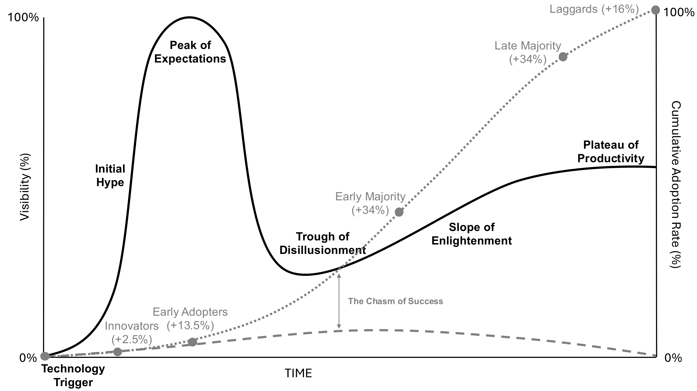

Optimism, curiosity, ambition get the credit. But it is anxiety that moves new technology from the lab into your operating room.
The Gartner Hype Cycle and Rogers' Adoption Curve are the two maps every industry uses to predict whether a new technology will live or die. Overlay them and an under-discussed truth emerges. Each adopter group is pushed onto the curve by a specific fear, and industry has learned to sell to each one.

Fear reshapes itself across phases for each adopter, acting as the constant undercurrent.Blumenfeld et al.
In the early 2000s, two technologies promised to solve the polyethylene wear problem. Both raced through innovation trigger and peak of expectations. Only one made it across the chasm.
Ratings serve as an external emotional amplifier within the adoption curve.from the paper
When industry sponsorship aligns with academic publications emphasizing relative benefits, the adoption curve accelerates dramatically.Blumenfeld et al.
Only through awareness of and vigilance against fear can our specialty advance safely and ethically.closing line